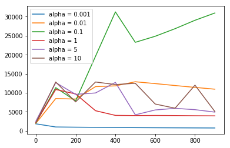

Problem Definition
The current problem to be solved is to seperate two distinct groups of data and classify them accordingly. The data is defined as having an (X) and a (Y) component, and as such can be visualized using a graph. We are given a set of non-linear datapoints, and our goal is to categorize them in an accurate manner.
Method and Implementation
In order to tackle this problem, I shall create a Neural Network consisting of:
- an input layer with 2 nodes (a1)
- a hidden layer (a2)
- an output layer with 1 node (a3)
- weights from a1 to a2 (W)
- weights from a2 to a3 (V)
The output node will signify a True or False response to the statement: "The input vector belongs in Class 1". An output of True means the vector is of Class 1, and an output of False means the vector is of Class 0.
before the weight layers are applied, layers a1 and a2 have another node added to them with the value of +1, incorporating a bias term.
For a certain number of epochs, we train on a dataset of (x1,x2) pairs with a bias term attached, resulting in a matrix of (3 x samplesize) We multiply this (W) to get a2, we add the +1 bias node, and we multiply this with (V) to get (a3), the prediction. Using backpropogation, we can train the net to have a higher accuracy.
Experiments
After fine tuning several paramaters, I found an alpha of 0.01 and a hidden_layer size of 8 to be effecient enough to achieve an accuracy of 99% or higher.
An experiment was done to see how error over time changes along with the learning rate. Neural Networks with the exact same paramaters and training sets were pitted against one another with the only difference being the learning rate. Below are the results:
As we can see, a learning rate of 0.01 seems to be most effecient and consistent. Other learning rates tend to dance around the gradient instead of slowly descending to the proper answer. In short, the lower the learning rate the more consistent the result will be at the cost of the time needed to reach the target.
Results
Using 5-Fold round robin validation we can see that the Neural Network's results are consistent. And we can create a confusion matrix to evaluate the Neural Network's performance.
Below is the confusion matrix for the Neural Net trained on the nonlinear dataset and its corresponding decision boundary graph.
Below is the confusion matrix for the Neural Net trained on the linear dataset.

Looking at these confusion matricies, we see a very nice overall accuracy of about 97% - where each Neural Network in the K-fold was only trained for 10% the time as the one above. This is useful for evaluating our system because it tells us exactly what it excels at. Looking at this, we can see that the network performs well in all categories, showing no bias toward Classificatoin 1 or 2, having very low false-positive and false-negative rates, and a high degree of accuracy.
Discussion
My approach:
- I think my method of creating the Neural Network is a great combination of both speed and accuracy. It is able to train 10000 epochs in about 7 seconds. There is no obvious signs of overfitting.
- If I had more time, I would make the input and output dimensions inferrable by the arguments, instead of being manually specified.
Overfitting
Although not seen in my Neural Net, Overfitting is when the output corresponds too closely or exactly to the training dataset, and doesn't perform well on external data sets. Essentially, the neural network merely memorizes the training data and regurgitates it back out.

Three examples of ways to reduce overfitting are:
Increasing the size of the dataset makes it more difficult for the network to simply memorize it and regurgitate it, therefore reducing the possibility that it will overfit.
Adding noise to the dataset allows the network to train for the more general case - that is, it will be able to generalize to other datasets easier. This reduces the ability of the network to overfit.
Adding regularization minimizes the magnitude of the weights, whereas without regularization the weights can be arbitrarily large. This forces the network to make compromises on its weights, and prevents the network from simply memorizing the dataset.
L2 Regularization
L2 Regularization is a form of regularization that minimizes the squared magnitude of the weights, not to be confused with L1 Regularization which minimizes the magnitude of the weights.
By adding Regularization to the neural network, the performance is as follows:
All paramaters remained the same, including layer size, epochs, and learning rate. The accuracy dropped to 80% however it will probably generalize better to other sets since it isn't overfitting as hard as the system above. This is to be expected, as it now needs to train longer to achieve the same level as accuracy on the training sets as before.